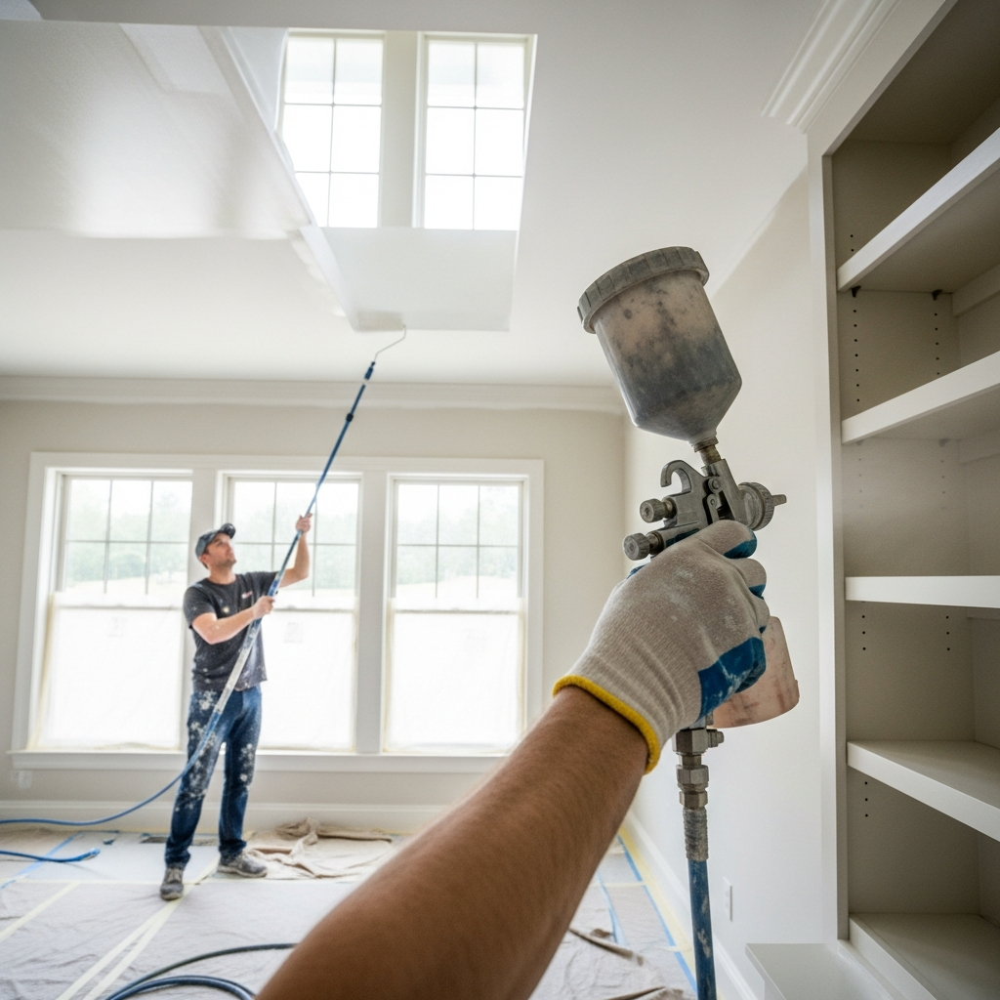

Tonos tierra y naturales
Buscamos conectar con la naturaleza, usando colores que aporten calma y serenidad al dormitorio.
El regreso del minimalismo cálido
El blanco puro deja paso al color crema y arena para crear espacios más acogedores.
¿Necesitas ayuda profesional?
En Pinturas Maresme somos expertos en Pintor decorator. Contacta con nosotros hoy mismo.
Contactar por WhatsApp